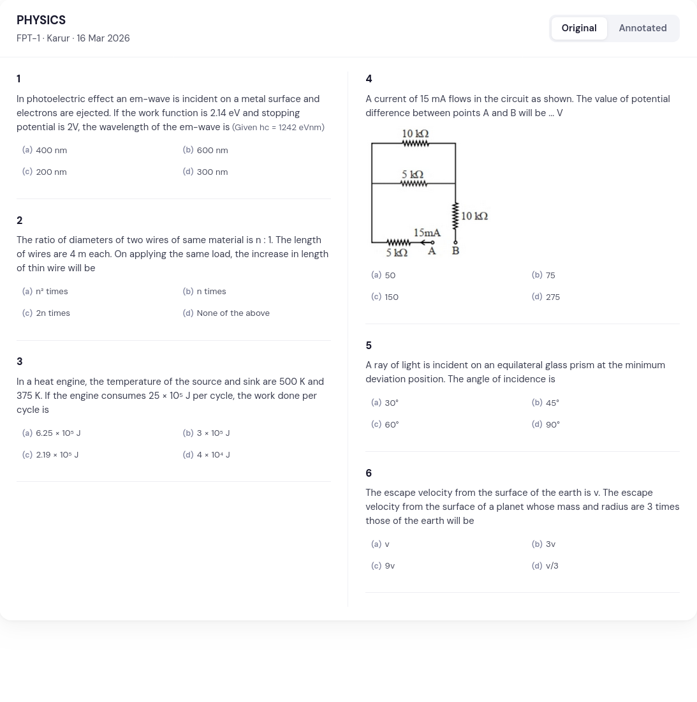
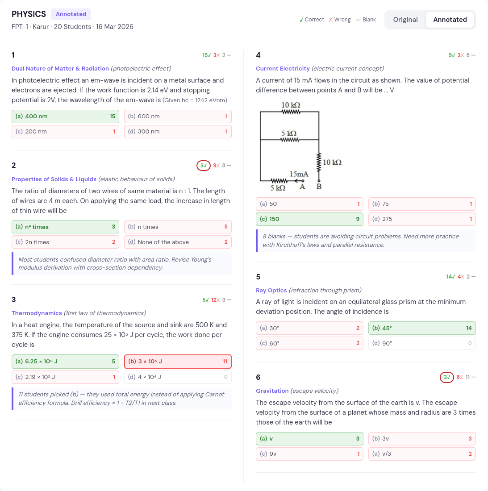
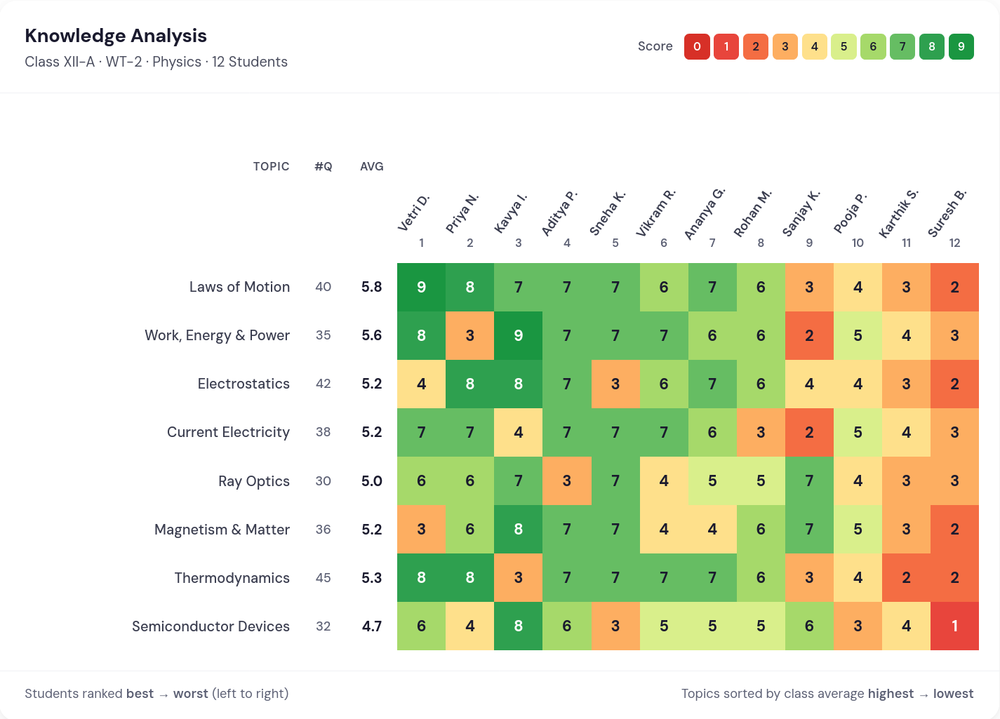
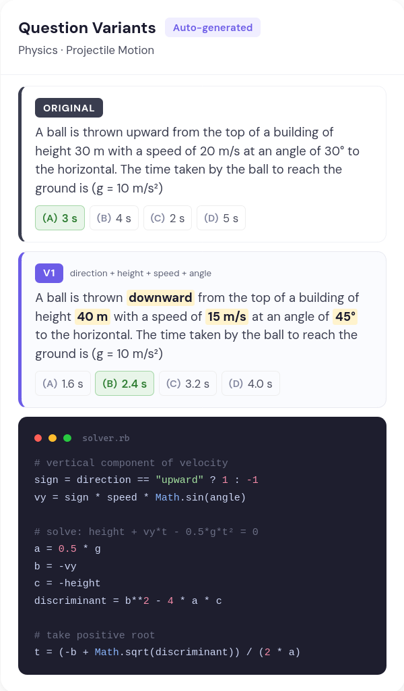
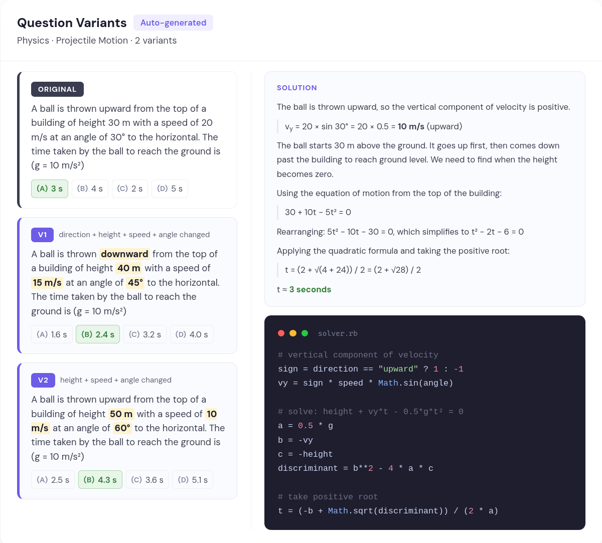
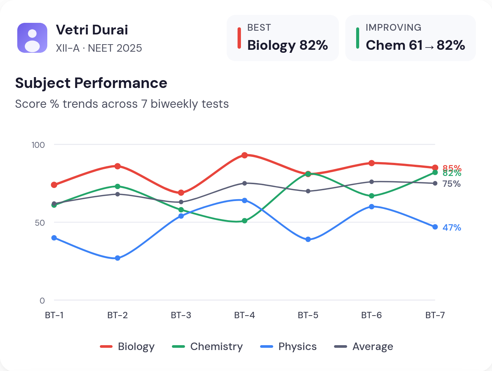
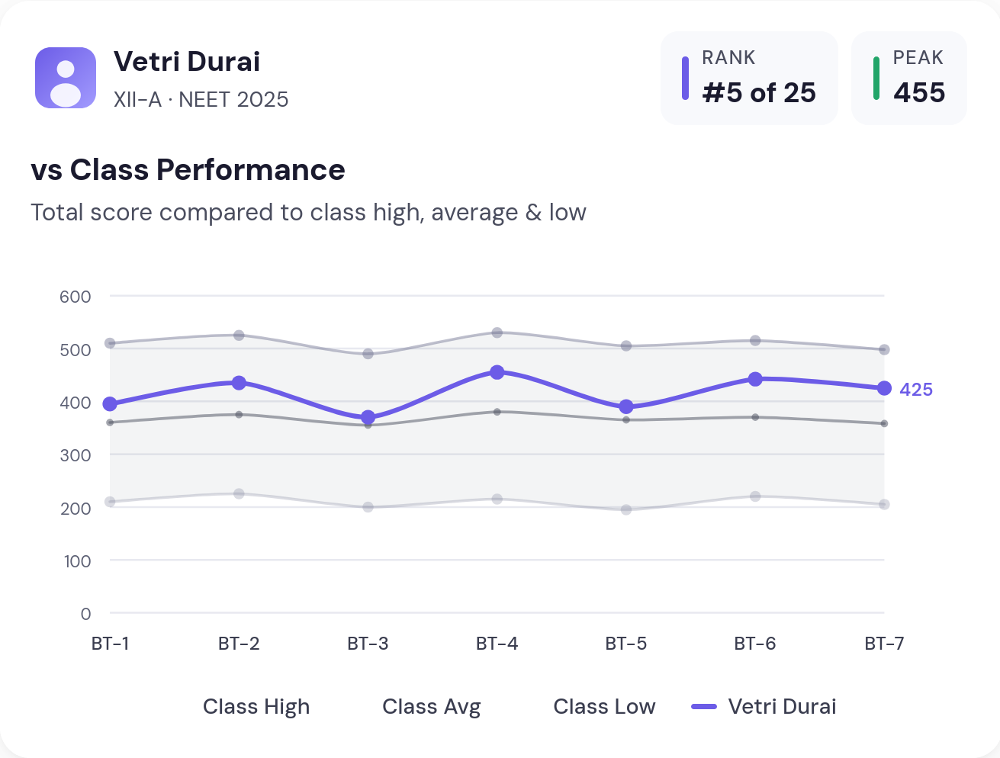
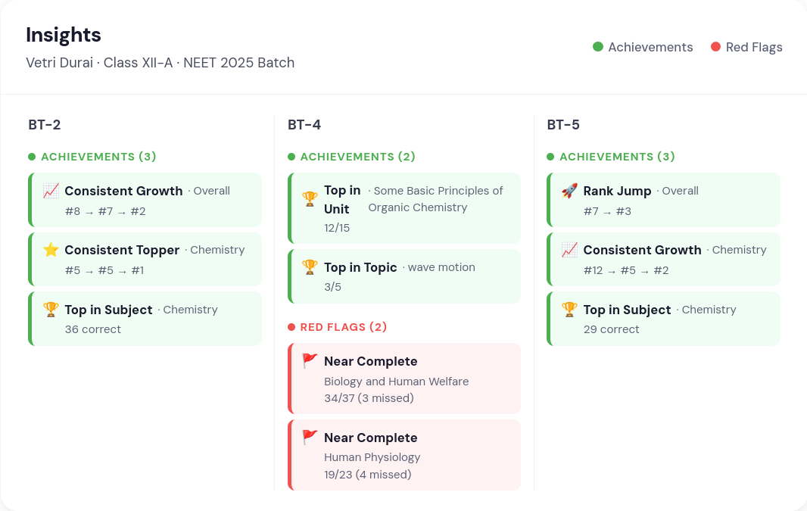

Assessment Analytics for Coaching Institutes
Built for coaching institutes that want clearer visibility and deeper discussions — without the OMR headaches.
Why OMR Report
Smudged bubbles. Low-quality photocopies. Rotated scans. Missing corners. Other OMR software chokes on these. We don't.
Our engine handles the reality of a coaching centre print room — not the ideal conditions of a demo.
Upload scanned OMR sheets. Get complete results, rank lists, and analytics within minutes. Not hours. Not the next day.
Your students get feedback while the test is still fresh. Your teachers can discuss papers the same day. The academic cycle tightens.
Which questions did most students get wrong? Which topics are weak across the batch? Which easy marks did they still miss?
Our analytics are built around QP discussion — not as a feature, but as the foundation.
The Platform
From scanning OMR sheets to sharing results with parents — the entire workflow lives here.

➔
Deep tagging of every question — down to units, topics, and cognitive levels. Powered by subject-matter expertise and AI.






From the Field
Faculty Lead
Premier Coaching Academy
Karur, Tamil Nadu
These two analysis reports are very, very helpful during QP discussion.
I am greatly impressed by the way you deliver your work and the sincerity you show in refining the analysis of the results.
Who It's For
Running weekly mocks and block tests at scale
Coordinating assessments and comparing performance across centres
Foundation through higher secondary, including integrated coaching
From foundation batches to droppers preparing for their next attempt
Get in Touch
We'll walk you through the platform using your actual test papers and student data. No generic slideshow.